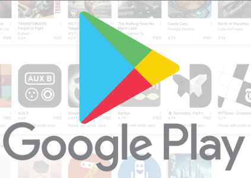
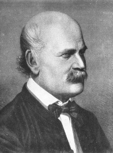

Партфоліо
Тут вы можаце знайсці праекты, якія я скончыў на DataCamp .
Праекты прысвечаны вырашэнню рэальных праблем, што патрабуе прымянення набытых навыкаў з выкарыстаннем нататнікаў даных. Кожны праект суправаджаецца назвай, апісаннем, бібліятэкамі Python і спасылкай на нататнік данных ў DataCamp Workspace . Гэта працоўная вобласць выкарыстоўваецца ў якасці падтрымкі для выяўлення ідэй і абмену думкамі на аснове прадастаўленых набораў даных і ўзораў баз даных для праекта навукокі даных.
DataCamp гэта онлайн платформа, накіраваная на навучанне навыкам каб стаць паспяховым навукоўцам даных. Перавага гэтай платформы што гэтыя навыкі можна набыць ва ўласным тэмпе — ад базавага узроўня "некадавання" да навукі даных і машыннага навучання. Шлях навучання можа быць самастойна створаны з бібліятэкі курсаў. У сярэднім кожны курс складаецца з16 кароткіх 5-хвілінных відэа і 48 інтэрактыўных практыкаванняў па кадаванні. Звычайна на праходжанне курса патрабуецца каля 4 гадзін. Інструктары што робяць курсы альбо прафесійныя выкладчыкі, альбо эксперты з вядучых такіх кампаній, як Amazon, Spotify, Facebook. Акрамя курсаў, гэта магчыма прымяніць новыя навыкі ў вырашэнні рэальных праблем з выкарыстаннем праектаў навукі даных.
На Дасягненні, вы можаце знайсці сертыфікаты, якія я атрымаў на гэтай платформе, колькасці курсаў і праектаў, якія я скончыў, і тэхналогіі, якія я вывучыў.


Візуальная гісторыя лаўрэатаў Нобелеўскай прэміі

Даследаванне фільмаў Netflix і запрошаных зорак у офісе
Android App Market у Google Play
Аналіз тэлевізійных даных

Доктар Земмельвейс і адкрыццё мыцця рук
Прагназаванне адабрэння крэдытных карт
Распрацоўка маркетынгавай базы даных банка